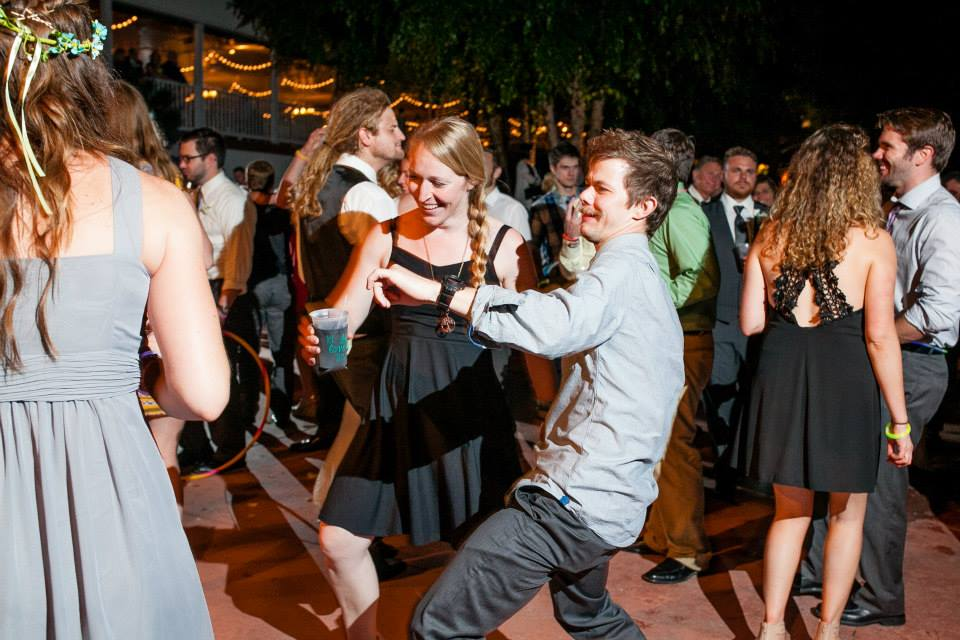
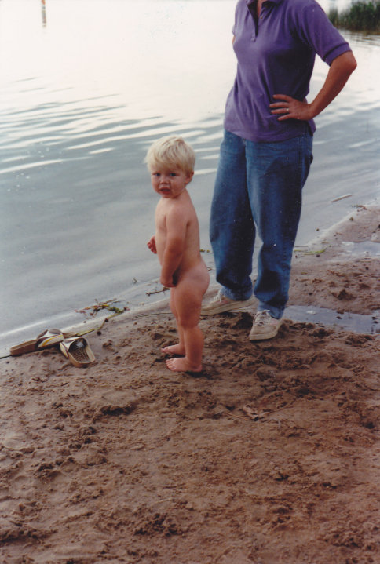
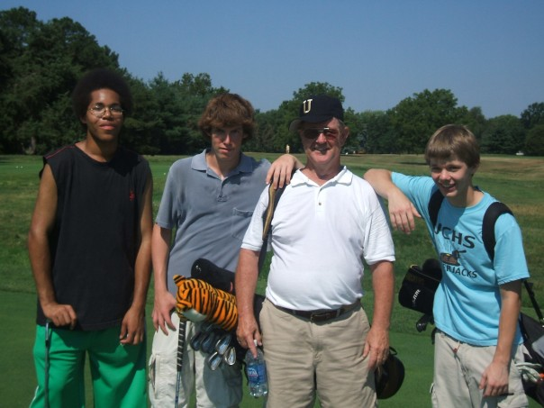
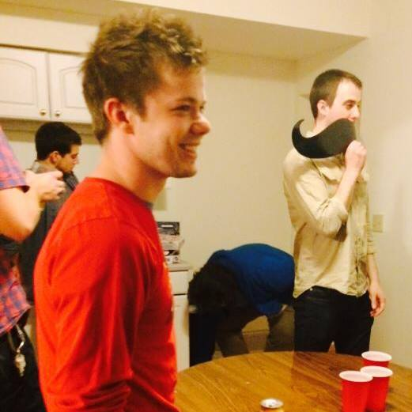
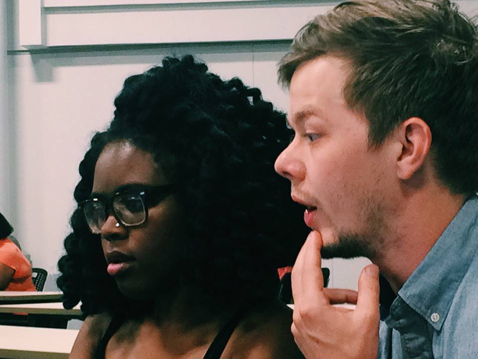

About the Legend: John**

**Disclaimer: Not John Legend the singer!!
Hi, my name is John Schulz and I'm going tell ya'll a
little about myself. I was born in the beautiful city of
St. Louis, Missouri - and I've lived here just about
ever since. I'm 27 years young, and about just as wise
some would say.Here's how it all started:
In the beginning

The young John baring it all
I born at St. Mary's Hospital, December 12th, 1988. I
remember that cold morning, just like it was yesterday..
.. Anywho, I grew up in a house with an older brother
and sister, (Justin, and Jessica respectively) in
University City. Played soccer, went to school, and
learned the ropes the hard way(being the youngest
and all).
In the middle

Hanging with the old golf team
When I made it to Highschool, I focused on sleeping,
video-gaming, soccer ⚽ and golf⛳ (nothing to
brag about if you look at our season records). At the
end of it all I had enough learning to get me into
college. Went to Truman State University in Northeast
Missouri. Had one hell of a time, but I couldn't figure
out which major was right for me, and found myself back
in St. Louis before too long.
In the now

Leisure time at a friend's place
After moving back in to town from college, I found myself
bouncing around to different jobs here and there. I've
helped rehab houses, worked at a fitness center, a
large company that specializes in printing healthcare
forms, and several restaurants. I've been working at a
wonderful restaurant called "The Fountain on Locust"
for the past 6 years and counting. I am a server/manager
and I really do enjoy where I work. After persuing
different ways to back into school for technology,
my opportunity arose through Launchcode! Taking classes
in programming and web development over the Summer of
2016, I think I've really found what I want to do.
In the future

Thinking and working hard in his Launchcode class
Launchcode has provided me with a new opportunity to
restart and "launch" a new career. My goal is to take
the awesome skills that I've been learning and work with
Launchcode to find an internship to build upon my skills
and advance into what I hope to be a new career. I know
I'm going to have to put in a lot of hard work, and take
time out of my social life to accomplish these goals -
but it's time to start fulfilling my potential. to
infinity and beyond!!